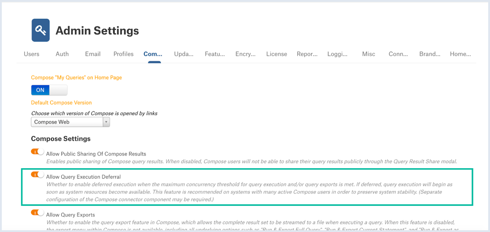

Deferred Query Execution¶
Alation Cloud Service Applies to Alation Cloud Service instances of Alation
Customer Managed Applies to customer-managed instances of Alation
Available from release 2021.4
Deferred query execution is a feature of Alation that improves system stability when many queries are being run. With deferred query execution, Alation will run queries from all users at the same time until the number of running queries exceeds a certain threshold. Once the threshold is exceeded, Alation will start to queue queries. Queued queries will be executed in a first in, first out manner until the number of running queries drops below the threshold.
Starting in 2022.3, deferred query execution is enabled by default and configured automatically. Upgrading to 2022.3 will automatically enable the feature and set the threshold and related settings to optimal default values. This will overwrite any custom values you may have configured for deferred query execution.
In 2022.2 and older versions, deferred query execution must be enabled and configured by a Server Admin with access to the Alation shell. See below for instructions.
Actions Affected by Deferred Query Execution¶
Deferred query execution affects the following actions:
{kind=link}
{kind=link}
When a concurrency threshold is reached by the system, Compose users will see a Query queued message:
{kind=link}
On the Results pane, the deferred state will be indicated with the Queued status with the clock icon and a timestamp indicating that the time the execution batch was deferred:
{kind=link}
After query execution is launched, the UI will update accordingly and the Launching query… message and then the Running status of the query will be displayed.
For query forms, the Run button will display the Running state and the Statement will show that the form has been queued. A queued form will be executed when resources are released:
{kind=link}
Configuring Deferred Query Execution¶
Version 2022.3 and Later¶
In version 2022.3 and later, deferred query execution is enabled and configured automatically. Contact Alation Support for help adjusting your settings, if needed.
Version 2022.2 and Earlier¶
In version 2022.2 and earlier, deferred query execution must be configured and enabled manually using the steps below. On these versions, consider enabling deferred query execution if:
Your instance has a large number of active Compose users who run queries simultaneously.
Users report performance degradation in Compose during peak hours:
Performance may deteriorate when there is connection resource contention and Compose is unable to process all user query requests because connection resources are exhausted.
Frequent disk access also slows down Compose responsiveness to all users.
Step 1: Define Concurrency Thresholds¶
The amount of resources that can be used for simultaneous query execution and other server processes is stored in the alation_conf parameters uwsgi.processes and uwsgi.threads. The default values are:
uwsgi.processes= 10
uwsgi.threads= 2
The total number of available uWSGI processes is the number of processes times the number of threads: 10 X 2 = 20.
Note
It is not recommended to change these defaults unless instructed by Alation Support in a specific troubleshooting scenario.
Based on these defaults, you can allocate some processes for concurrent query execution. If the value you set is exceeded, Alation will begin to queue query executions. They will be queued and run as soon as resources become available.
You’ll need to define the following settings:
Maximum query concurrency: This parameter determines the number of queries that are allowed to run simultaneously before they start to get queued. This affects all types of queries: Compose, query forms, scheduled queries, exports, and Excel Live reports.
Recommended value: Set to a number that equals 70% of the total number of available processes. With the default values of
uwsgi.processesanduwsgi.threads, you can set it to14.
Maximum export concurrency: This parameter further limits the number of exports and Excel Live reports that are allowed to run simultaneously before they start to get queued. This parameter only takes effect if its value is lower than the maximum query concurrency. If not set, or if set to a value higher than the maximum query concurrency, exports and Excel Live reports will use the value set for maximum query concurrency instead.
Recommended value: Set to a number that equals to 30% of the total number of available processes. With the default values of
uwsgi.processesanduwsgi.threads, you can set it to6.
Minimum polling interval: This parameter determines how long Alation waits to check with the server to see if a query is queued, running, or complete. The value is in milliseconds.
Recommended value: With the default values of
uwsgi.processesanduwsgi.threads, set to15000(15 seconds). You can decrease this value so polling occurs more often if you have more processes. For example, with 4 threads and 40 processes, you could set this value to3000(3 seconds). If you have changed the default number of threads and processes, please check with Alation Support to determine an appropriate value for the minimum polling interval.
Step 2: Enter the Alation Shell¶
Concurrency thresholds are set in alation_conf. To use alation_conf, you must first access the Alation server and enter the Alation shell.
Use SSH to connect to the Alation server.
Enter the Alation shell using the following command:
sudo /etc/init.d/alation shell
Step 3: Set the Concurrency Thresholds¶
The way you set the concurrency thresholds depends on your Alation version. See the appropriate instructions below for your Alation version.
For versions 2021.4.8 and later:
Set the dedicated parameters for maximum query and export concurrency as determined in step 1.
alation_conf alation.connector.managed_execution.max_query_concurrency -s 14
alation_conf alation.connector.managed_execution.max_export_concurrency -s 6
Important
These dedicated parameters will override any values set by the connector.extra_flags parameter.
For versions 2021.4.7 and earlier:
Add the -Dconnector.max_query_concurrency and the -Dconnector.max_export_concurrency values to the alation_conf parameter connector.extra_flags.
Important
The
connector.extra_flagsparameter may already have some existing values set. You need to append the new values. Do not overwrite the existing values.
Check the current values of
connector.extra_flags:alation_conf connector.extra_flagsThis will print the current values to the console.
Set the new values. Note the space after the first single quote and before the first value. Make sure your value string includes this space.
alation_conf connector.extra_flags -s ' -Dconnector.max_query_concurrency=14 -Dconnector.max_export_concurrency=6'
Example of adding new values to existing values:
alation_conf alation.connector.managed_execution.max_query_concurrency -s ' -Dconnector.max_query_concurrency=14 -Dconnector.max_export_concurrency=6 -Djavax.net.ssl.trustStorePassword=changeit'
Stay in the Alation shell.
Step 4: Set the Minimum Polling Interval¶
Still in the Alation shell, set the value for the minimum polling interval as determined in step 1.
alation_conf alation.query_exec.polling.min_interval -s 15000
Stay in the Alation shell.
Step 5: Deploy alation_conf and Restart the Connector¶
Still in the Alation shell, deploy the changes to alation_conf and restart the Connector component.
alation_action deploy_conf_all
alation_supervisor restart java:connector
Stay in the Alation shell.
Step 6: Enable Deferred Query Execution¶
After setting the thresholds, enable deferred query execution:
Still in the Alation shell, use alation_conf again and set the parameter
alation.query_exec.deferral.enabledtoTrue:alation_conf alation.query_exec.deferral.enabled -s True
No restart is required after changing this value.
Exit the Alation shell:
exit
Enabling Deferred Query Execution in the UI¶
Alternatively, you can turn deferred query execution on and off in the Alation UI in Admin Settings > Compose Settings. Use the feature toggle Allow Query Execution Deferral in order to enable or disable it. However, the concurrency thresholds cannot be set in the Alation UI and require backend access to the Alation server.

If the concurrency thresholds are configured but deferred query execution feature is disabled, the thresholds will still apply and query executions will be queued anyway. However, users will not see the Query queued message in the Compose UI. Queries will remain in the Launching query state until resources become available.
If the concurrency thresholds are not set but deferred query execution is enabled, then the feature will have no effect on the system and query executions will not be queued. If you enable deferred query execution, make sure the concurrency thresholds have been set.